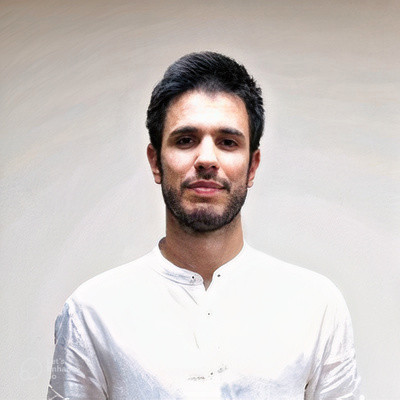

About Me

Hi! Welcome to my personal homepage.
I am Francesco Fabbri, Research Scientist at Spotify, where I work on Representation Learning and Generative Responsible AI for personalization. I earned my Ph.D. in Computer Science (cum laude) from Pompeu Fabra University, Barcelona, focusing on analyzing and mitigating unintended effects in online social platforms. During my Ph.D., I was a visiting researcher at the University of Helsinki, working on responsible recommender systems. I also interned at Huawei, where I worked on Federated Learning for personalization.
My research has been published in top-tier conferences including CIKM, theWebConf, ICWSM, and ECIR. I also won the Best Paper Award at theWebConf and the Ted Nelson Award at Hypertext. Before pursuing my Ph.D., I obtained a Master’s Degree (Honours) in Data Science and a Bachelor of Science in Statistics both from Sapienza, University of Rome.
Last News
- Jan 2024 Personalized Audiobook Recommendations at Spotify Through Graph Neural Networks accepted at theWebConf ‘24.
- Dec 2023 Robustness in Fairness against Edge-level Perturbations in GNN-based Recommendation accepted at ECIR ‘24.
- Aug 2023 2 new papers on graph-learning for related search and fairness and GNNs accepted at CIKM ‘23.
- Oct 2022 I defended my Ph.D. Thesis with title “Algorithmic Bias in Graph-Based Recommender Systems” (cum laude).
- Sep 2022 I joined Spotify as Research Scientist!
- Jan 2022 New paper Rewiring What-to-Watch-Next Recommendations to Reduce Radicalization Pathways accepted at theWebConf 2022! EDIT: We won the [Best Paper Award]!
Publications
- Robustness in Fairness against Edge-level Perturbations in GNN-based Recommendation L. Boratto, F. Fabbri, G. Fenu, M. Marras, G. Medda
Preprint: arxiv:2401.13823 [link] (2024)
- Fair Max-Min Diversity Maximization in Streaming and Sliding-Window Models Y. Wang, F. Fabbri, M. Mathioudakis, J. Li
Entropy [link] (2023)
- Counterfactual Graph Augmentation for Consumer Unfairness Mitigation in Recommender Systems L. Boratto, F. Fabbri, G. Fenu, M. Marras, G. Medda
Proceedings of the 32nd (ACM) International Conference on Information and Knowledge Management, (CIKM) 2023, Birmingham, United Kingdom, October 21-25, 2023 [link] (2023)
- Graph Learning for Exploratory Query Suggestions in an Instant Search System E. Palumbo, A. Damianou, A. Wang, A. Liu, G. Fazelnia, F. Fabbri, R. Ferreira, F. Silvestri, H. Bouchard, C. Hauff, M. Lalmas, B. Carterette, P. Chandar, D. Nyhan
Proceedings of the 32nd (ACM) International Conference on Information and Knowledge Management, (CIKM) 2023, Birmingham, United Kingdom, October 21-25, 2023 [link] (2023)
- The Interconnected Nature of Online Harm and Moderation: Investigating the Cross-Platform Spread of Harmful Content between YouTube and Twitter V. Gatta, L. Luceri, F. Fabbri, E. Ferrara
Proceedings of the 34th (ACM) Conference on Hypertext and Social Media, (HT) 2023, Rome, Italy, September 4-8, 2023 [link] (2023)
- Rewiring What-to-Watch-Next Recommendations to Reduce Radicalization Pathways (Extended Abstract) F. Fabbri, Y. Wang, F. Bonchi, C. Castillo, M. Mathioudakis
Proceedings of the Thirty-Second International Joint Conference on Artificial Intelligence, (IJCAI) 2023, 19th-25th August 2023, Macao, SAR, China [link] (2023)
- Max-Min Diversification with Fairness Constraints: Exact and Approximation Algorithms Y. Wang, M. Mathioudakis, J. Li, F. Fabbri
Proceedings of the 2023 (SIAM) International Conference on Data Mining, (SDM) 2023, Minneapolis-St. Paul Twin Cities, MN, USA, April 27-29, 2023 [link] (2023)
- GNNUERS: Fairness Explanation in GNNs for Recommendation via Counterfactual Reasoning G. Medda, F. Fabbri, M. Marras, L. Boratto, G. Fenu
Preprint: arxiv:2304.06182 [link] (2023)
- FedFNN: Faster Training Convergence Through Update Predictions in Federated Recommender Systems F. Fabbri, X. Liu, J. McKenzie, B. Twardowski, T. Wijaya
Preprint: arxiv:2309.08635 [link] (2023)
- Algorithmic bias in graph-based recommender systems F. Fabbri
Unknown Venue [link] (2022)
- Streaming Algorithms for Diversity Maximization with Fairness Constraints Y. Wang, F. Fabbri, M. Mathioudakis
38th (IEEE) International Conference on Data Engineering, (ICDE) 2022, Kuala Lumpur, Malaysia, May 9-12, 2022 [link] (2022)
- Exposure Inequality in People Recommender Systems: The Long-Term Effects F. Fabbri, M. Croci, F. Bonchi, C. Castillo
Proceedings of the Sixteenth International (AAAI) Conference on Web and Social Media, (ICWSM) 2022, Atlanta, Georgia, USA, June 6-9, 2022 [link] (2022)
- Rewiring What-to-Watch-Next Recommendations to Reduce Radicalization Pathways F. Fabbri, Y. Wang, F. Bonchi, C. Castillo, M. Mathioudakis
(WWW) ‘22: The (ACM) Web Conference 2022, Virtual Event, Lyon, France, April 25 - 29, 2022 [link] (2022)
- Comparing Equity and Effectiveness of Different Algorithms in an Application for the Room Rental Market D. Solans, F. Fabbri, C. Calsamiglia, C. Castillo, F. Bonchi
(AIES) ‘21: (AAAI/ACM) Conference on AI, Ethics, and Society, Virtual Event, USA, May 19-21, 2021 [link] (2021)
- From the Beatles to Billie Eilish: Connecting Provider Representativeness and Exposure in Session-Based Recommender Systems A. Ariza, F. Fabbri, L. Boratto, M. Salam
Advances in Information Retrieval - 43rd European Conference on (IR) Research, (ECIR) 2021, Virtual Event, March 28 - April 1, 2021, Proceedings, Part (II) [link] (2021)
- Fair and Representative Subset Selection from Data Streams Y. Wang, F. Fabbri, M. Mathioudakis
(WWW) ‘21: The Web Conference 2021, Virtual Event / Ljubljana, Slovenia, April 19-23, 2021 [link] (2021)
- The Effect of Homophily on Disparate Visibility of Minorities in People Recommender Systems F. Fabbri, F. Bonchi, L. Boratto, C. Castillo
Proceedings of the Fourteenth International (AAAI) Conference on Web and Social Media, (ICWSM) 2020, Held Virtually, Original Venue: Atlanta, Georgia, USA, June 8-11, 2020 [link] (2020)